هذا ألبوم لصور على النهر التمز في لندن (أو قريب عنه)
حمزة العقاد
١ - غرب ضد شرق - آذار ٢٠٢٦

٢ - زرقة الشفق - آذار ٢٠٢٦

٣ - ثعلب وقت الجَزْر - آب ٢٠٢٦
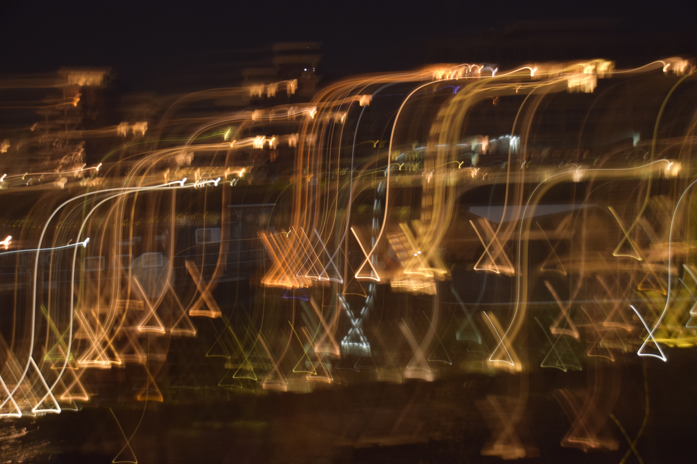
٤ - لا - آب ٢٠٢٦
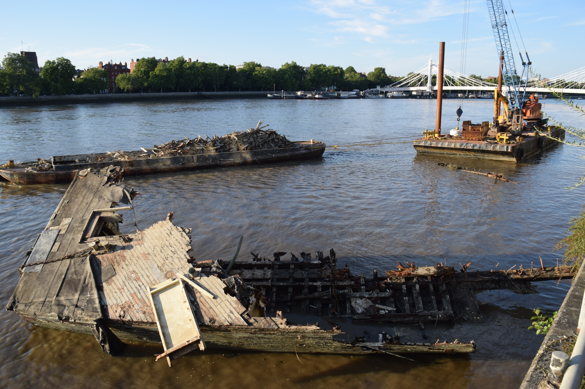
٥ - حُطام سفينة - تموز ٢٠٢٦
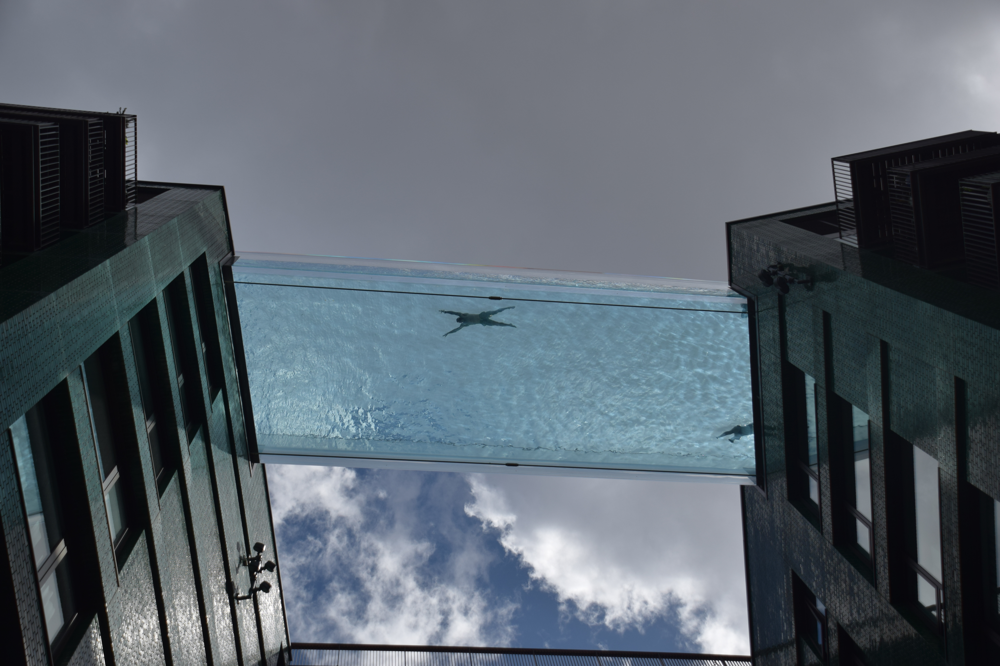
٦ - زجاج - آذار ٢٠٢٦
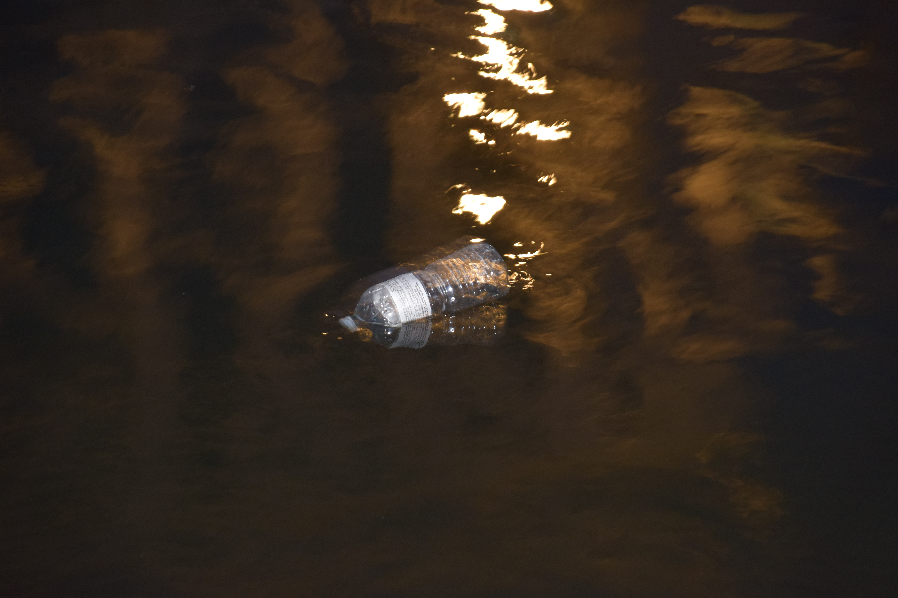
٧ - قمامة - أيار ٢٠٢٦
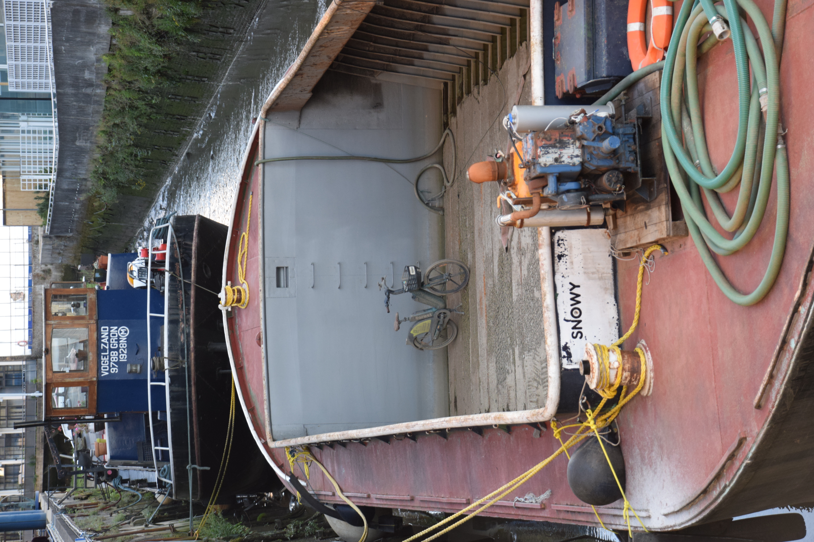
٨ - مين وقف البسكليت؟ - تموز ٢٠٢٦
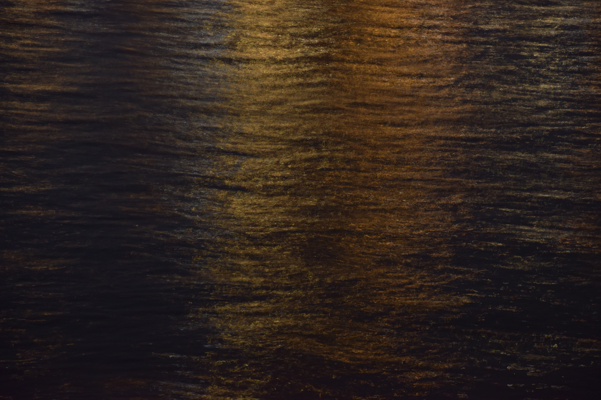
٩ - أصفر وبرتقالي - آذار ٢٠٢٦
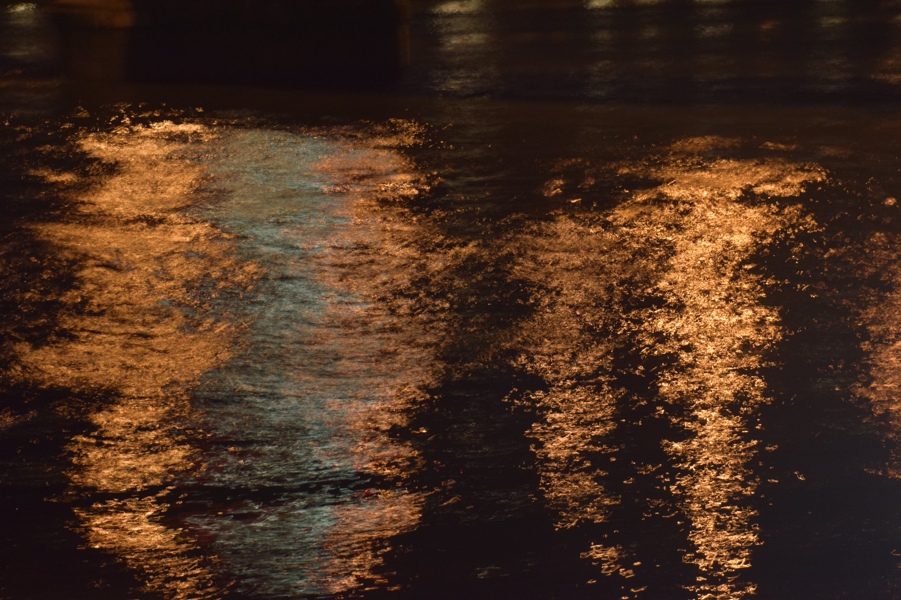
١٠ - أمواج - آذار ٢٠٢٦
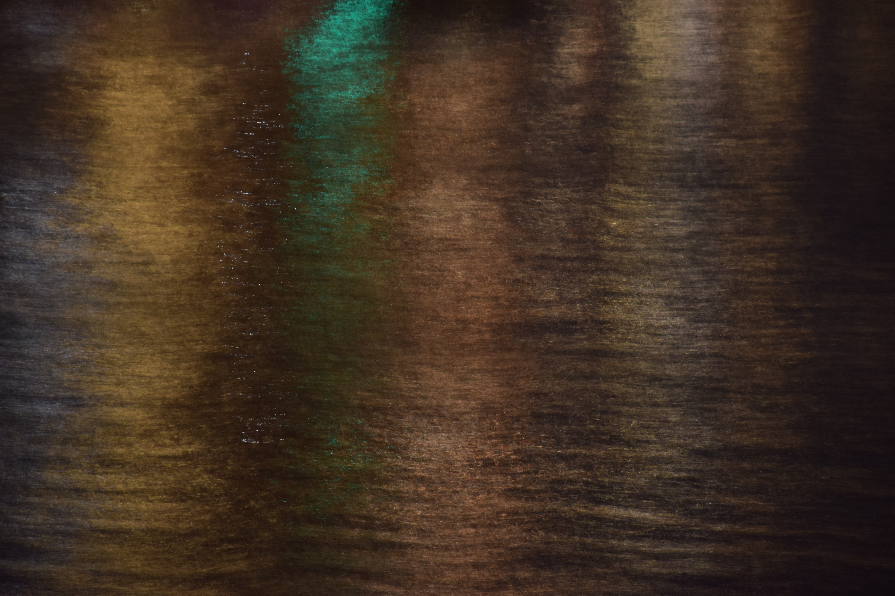
١١ - ألوان مائية - آذار ٢٠٢٦
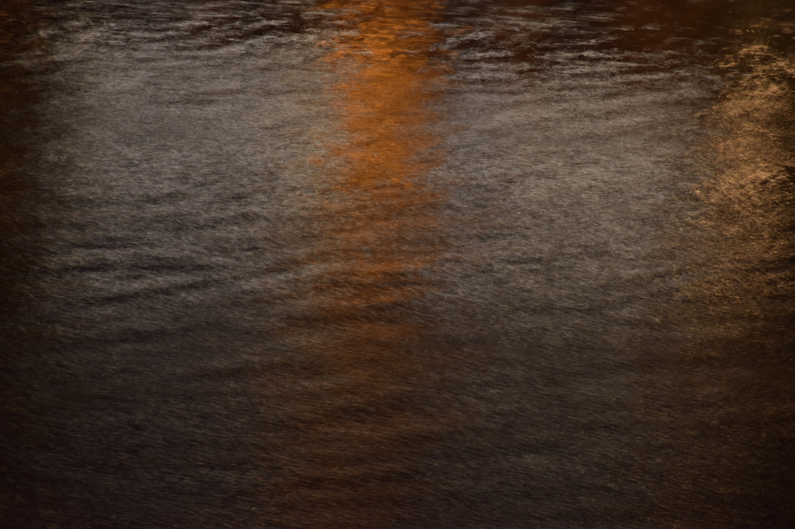
١٢ - خطّ - آذار ٢٠٢٦

١٣ - حطام سفينة ٢ - تموز ٢٠٢٦
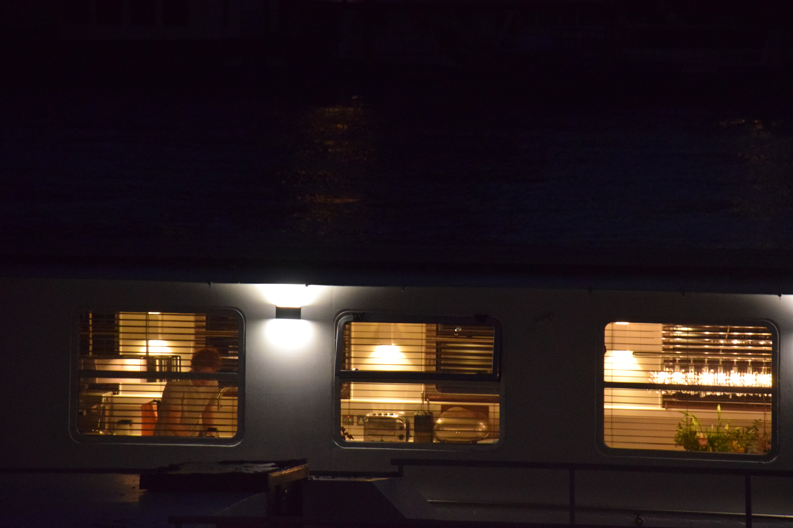
١٤ - طبخ - آب ٢٠٢٦
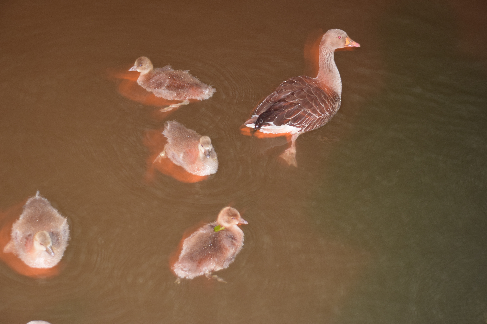
١٥ - بطّ ١ - تموز ٢٠٢٦
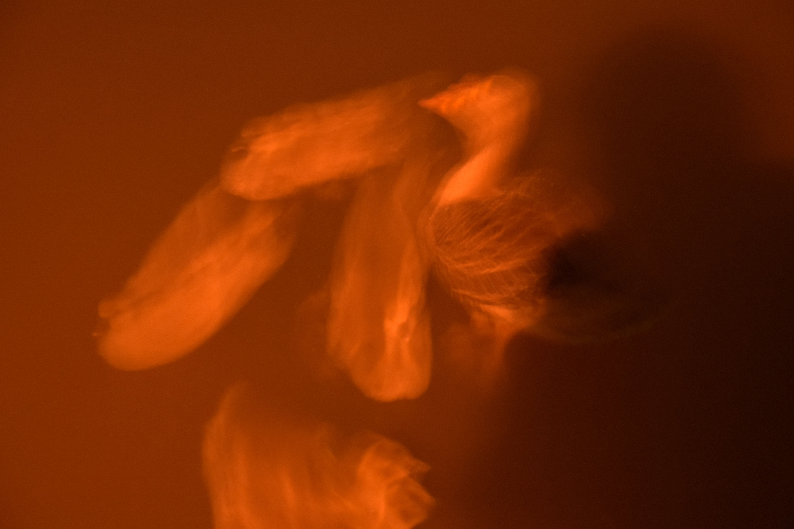
١٦ - بطّ ٢ - تموز ٢٠٢٦
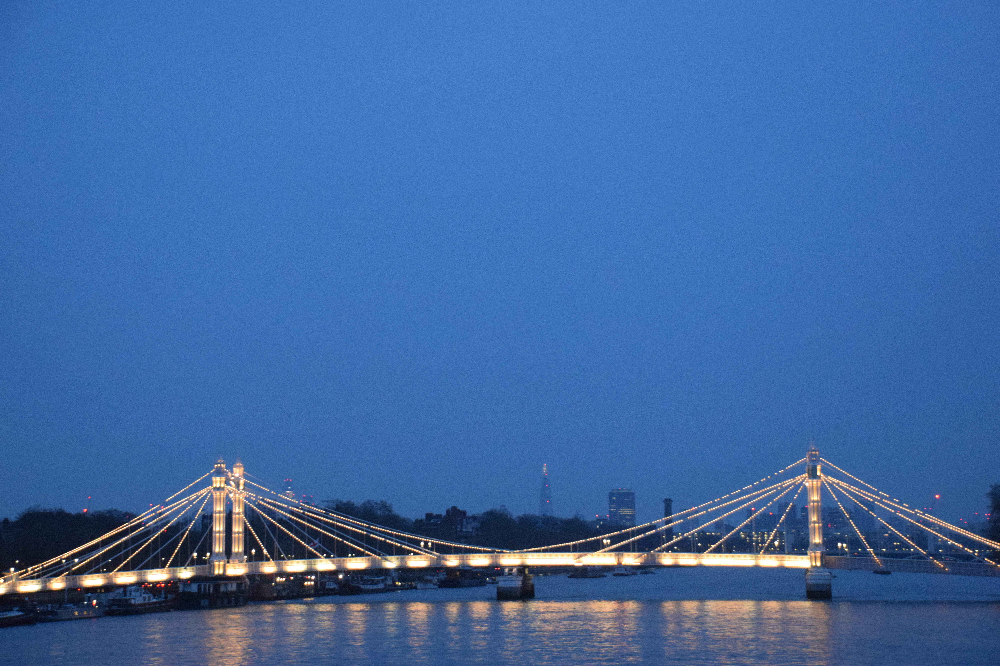
١٧ - زرقة الشفق ٢ - آذار ٢٠٢٦
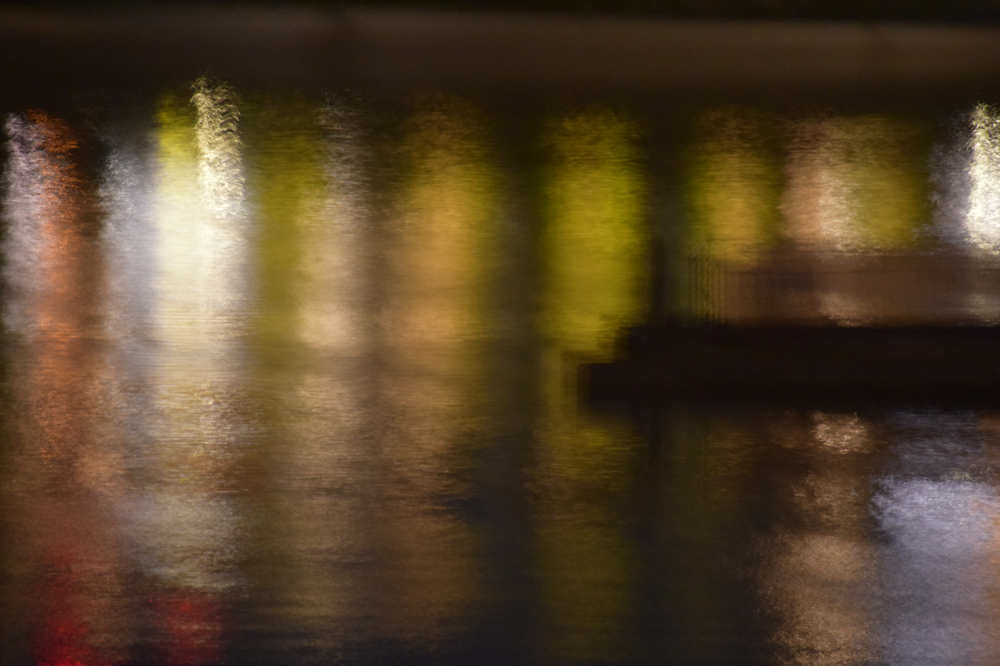
١٨ - ظلال من الأخضر - آب ٢٠٢٦
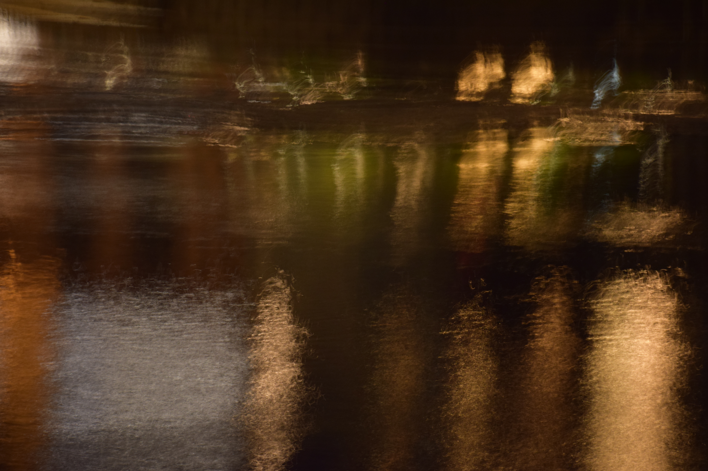
١٩ - محو - آب ٢٠٢٦